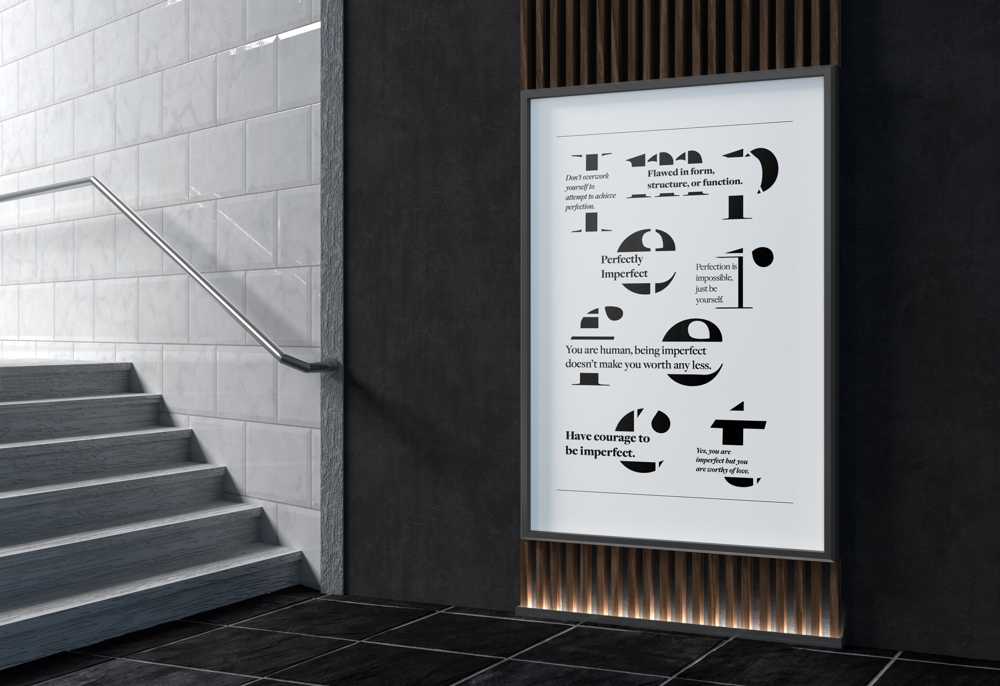
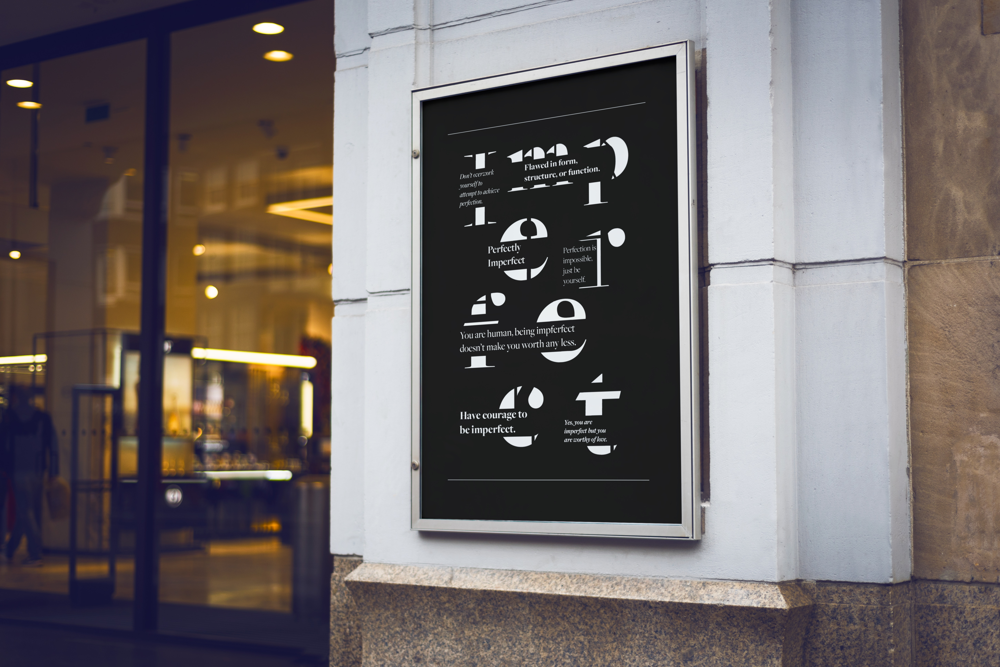
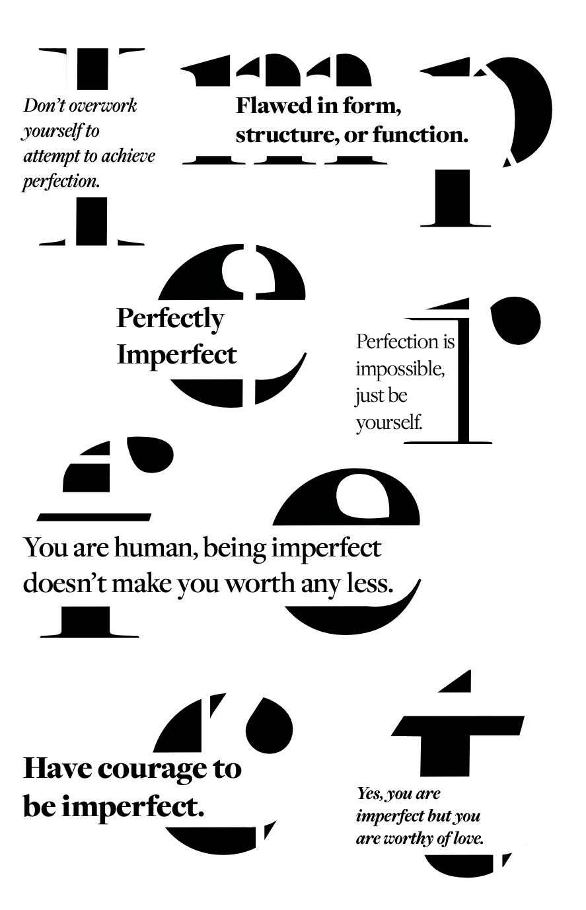
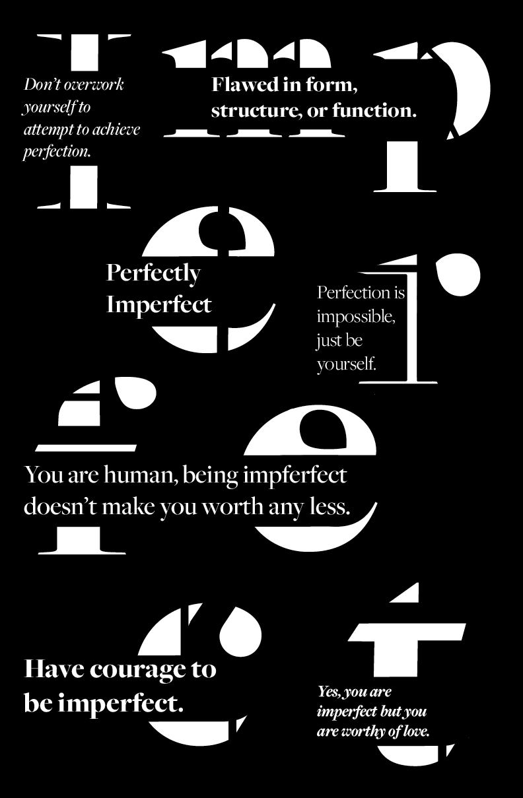

Expressive Type Poster
My goal for this poster was to design a visual composition, using typography and a grid, based on the word imperfect. This word has significant meaning to me because I am a perfectionist, and I am constantly having to remind myself that I don’t need to be so critical of myself and my work.
I wanted the overall poster to feel broken or “imperfect,” but look like it was trying to be perfect. I created broken pieces within the letters, and fit positive affirmations between them to symbolize filling the gaps of imperfection with positivity and encouragement.
Tools: Adobe Illustrator
Year: Fall, 2024



